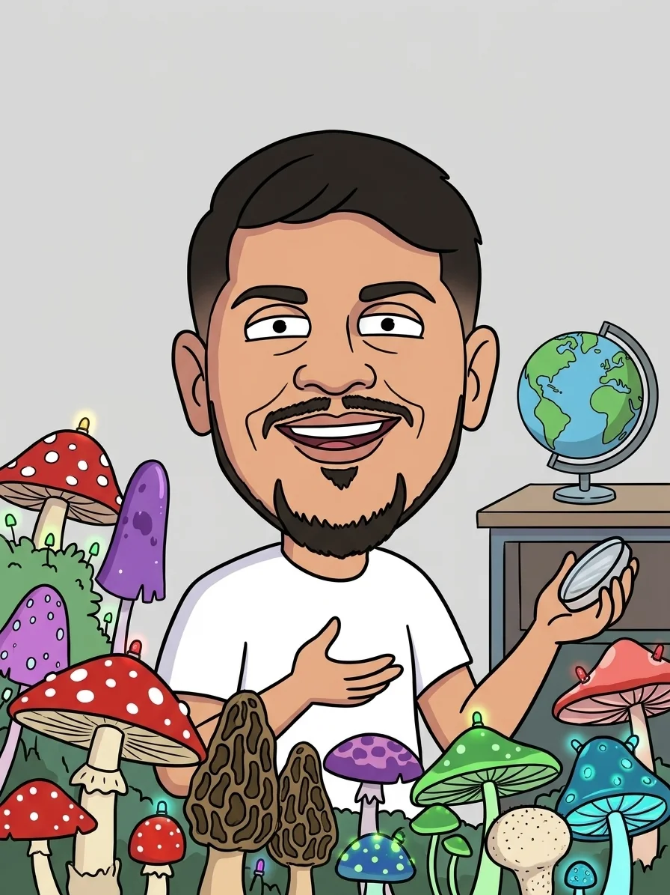

Los hongos micorrícicos tejen bajo el suelo una red viva que se asocia con más del 80 % de las plantas. Recorré el planeta para ver dónde prosperan, qué tan bien los conocemos y cuánto de ese mundo está protegido.
Bajo cada paso hay una red de hongos que alimenta a las plantas. Elegí un lugar y te mostramos cuánta hay.
Tocá cualquier lugar del globo o del mapa para ver qué estima el modelo de SPUN en ese punto. Los hongos micorrícicos se asocian con más del 80 % de las especies de plantas y forman redes bajo el suelo.
Esta web es gratuita, no tiene publicidad y no recibe dinero. Si querés ayudar a que los hongos y sus ecosistemas se conozcan y se protejan, podés colaborar directamente con organizaciones que trabajan en eso.
Mapea las redes de hongos micorrícicos del mundo junto a investigadores locales. Sus mapas son la base de las capas de esta web.
Donar a SPUN ↗Fundación nacida en Chile que impulsó reconocer la «funga» junto a la flora y la fauna. Trabaja en educación, ciencia ciudadana y conservación de hongos.
Donar a Fungi Foundation ↗Restaura ecosistemas argentinos, como los Esteros del Iberá, una de las paradas del recorrido «Hongos de Argentina». Proteger el ecosistema completo también protege la vida del suelo.
Donar a Rewilding Argentina ↗Las donaciones se hacen en los sitios de cada organización y van directamente a ellas: este proyecto no recibe ni administra dinero, y no está afiliado a ninguna de ellas. Te recomiendo conocer su trabajo antes de colaborar.
Explorá la red que sostiene la vida.
Micelia es una experiencia educativa y gratuita para explorar el reino Fungi sobre un globo interactivo. Reúno mapas por capas y recorridos narrados con cifras de fuentes científicas, y busco explicar por qué los hongos son relevantes para los ecosistemas y el clima. No tiene publicidad ni vendo datos.

Soy Guido, desarrollador independiente en Argentina y entusiasta del reino Fungi. Me mueve la idea de conectar a las personas con un reino asombroso, educando y transmitiendo su conocimiento de manera interactiva. Este es un proyecto educativo y de código abierto, y los comentarios, correcciones y colaboraciones son bienvenidos.
Es una primera versión. Las capas del globo y del mapa son los mapas predictivos globales de SPUN (Underground Atlas), que reduje de resolución para la web: las texturas tienen unos 10 km por píxel en el ecuador, y los valores de la ficha son promedios en celdas de unos 39 km. Para el análisis científico conviene usar los archivos originales. Las cifras de los recorridos provienen de las fuentes citadas en cada parada, aunque las leí a través de resúmenes de prensa y comunicados de los autores; las del recorrido «Hongos de Argentina» son un cálculo mío sobre los mapas.
Con el modo «Hongos en órbita» encendido, los puntos que se mueven alrededor del globo son satélites reales, entre ellos la Estación Espacial Internacional y la estación china Tiangong. Sus posiciones se calculan en tu navegador, en tiempo real, con los elementos orbitales públicos de CelesTrak y la librería satellite.js (MIT). Solo se ven cuando les da el sol, como pasa en el cielo real; las dos estaciones se muestran siempre, en gris mientras cruzan la sombra de la Tierra. Las estrellas fugaces (siempre visibles) y los destellos son una recreación: el fenómeno es real (los paneles de un satélite reflejan el sol y miles de meteoros entran cada día a la atmósfera, a unos 100 km de altura), pero el momento y el lugar en que aparecen acá son al azar, y las estelas se dibujan más largas para que se distingan.
Los mapas de riqueza, rareza y densidad de hifas son de la Society for the Protection of Underground Networks (SPUN) y se publican bajo licencia Creative Commons Atribución 4.0 Internacional (CC BY 4.0). Los reproyecté a EPSG:4326, reduje su resolución y les apliqué paletas de color propias. Publicaciones originales:
Qué muestra cada capa:
UNEP-WCMC e IUCN (2026), Protected Planet: The World Database on Protected Areas (WDPA) [en línea], noviembre de 2026, Cambridge, Reino Unido: UNEP-WCMC e IUCN. Disponible en www.protectedplanet.net.
Uso solo los polígonos con estado designado, establecido, inscripto o adoptado, y dejo afuera las áreas propuestas y las reservas de biósfera de la UNESCO. Los rasterizé a unos 4 km por píxel y los muestro solo sobre la tierra firme que cubren los mapas de hongos. Esta web no ofrece descarga de los datos de la WDPA: quien los necesite debe obtenerlos en Protected Planet. Su uso está limitado a fines no comerciales.
La capa «Hotspots AM y protección» y el porcentaje de la parada «La brecha en este mapa» son un cálculo mío: tomo el 5 % de la superficie con mayor riqueza estimada de hongos AM (el mismo percentil 95 que usa el estudio; con estos datos el umbral da 39,3 VT, frente a los 39,9 VT publicados) y mido qué parte cae dentro de áreas protegidas. Uso la versión «Predicted» del mapa, mientras que el estudio usa la versión de muestreo alto, así que es una aproximación y no reemplaza sus cifras.
Los colores de cada capa van del percentil 2 al 98 de sus valores, para que unos pocos extremos no aplanen el resto del mapa.
Publico el código de este proyecto bajo licencia MIT. Los textos y recorridos están bajo licencia Creative Commons Atribución 4.0 Internacional (CC BY 4.0): podés reutilizarlos citando este sitio. Los datos de SPUN mantienen su licencia CC BY 4.0 y los de la WDPA, los términos de Protected Planet.
Las fotos de paisajes de los recorridos vienen de Wikimedia Commons, y las de hongos, de iNaturalist. Las cargo en el momento desde esos sitios y muestro siempre el autor y la licencia de cada una. De iNaturalist uso solo observaciones de «grado de investigación», es decir, con la especie confirmada por otras personas de la comunidad, y solo fotos con licencias abiertas (CC0, CC BY, CC BY-SA o CC BY-NC). Es una verificación comunitaria, no una revisión científica formal, y estas fotos no sirven para identificar hongos.
Esta web no recibe dinero. En la sección Apoyá hay enlaces para colaborar directamente con organizaciones que estudian y protegen los hongos y sus ecosistemas.
Este sitio no usa cookies, no tiene publicidad, no mide visitas y no guarda datos de quienes lo visitan. Para funcionar, tu navegador pide recursos a servicios externos, que reciben esa consulta (y tu dirección IP) como cualquier visita a sus sitios: unpkg.com (librerías del globo y del mapa), EOX (imágenes satelitales), NASA GIBS (modo noche), CelesTrak (órbitas de satélites, solo si activás «Hongos en órbita»), OpenStreetMap (nombre del lugar en «¿Qué hay bajo tus pies?»), iNaturalist (fotos de hongos) y Wikimedia Commons (fotos de paisajes). Cada uno tiene su propia política de privacidad.
Comentarios, correcciones y propuestas de colaboración: guido.emanuelparra [arroba] gmail.com.